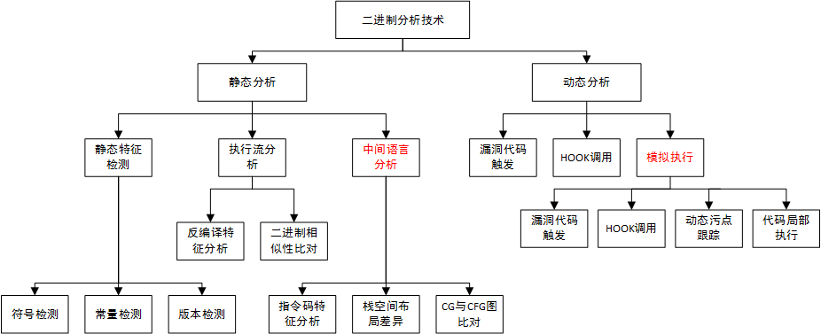

1.开源很重要，漏洞更加值得关注
开源代码在互联网技术中扮演的角色愈发重要，例如Linux、Android、GNU开源项目，它们构成了互联网及物联网大厦的地基，现在很难说哪个厂商开发的设备或app不依赖于任何开源代码。对开源漏洞进行检测还是很有必要的！目前黑客入侵的最高效简单的方式就是通过已知开源代码的漏洞进行入侵，也就是说如果厂商的代码存在高危的开源漏洞，那在黑客眼中就如同裸奔。
2.为什么是二进制分析技术
如果通过源码检测开源漏洞，那就是个简单的补丁文件文本匹配问题。这个问题我也想过，但二进制分析依然有存在的需要：通过源码检测属于白盒审计过程，它存在于代码产品研发阶段。可以说，如果开源代码引入和应急响应做得好，二进制分析是无可作为的，但是根据SDL（安全开发流程）原则，安全应该存在于产品全生命周期中，安全大任仅依靠源码审计阶段是危险的。二进制分析是一个黑盒技术，它通过搜寻公开信息对代码产品的开放形态进行分析，这更符合黑客渗透过程，黑盒方式的漏洞扫描作为SDL对于开源漏洞检测的最后一个环节是必要存在的。而且，目前有能力全流程落入安全管理的厂商还是少的，大多数厂商的产品功能依据已有代码或开源代码二次开发，开源漏洞是广泛存在的，这个问题可以参考科恩实验室的IOT报告。因此，从黑盒角度出发，运用二进制分析技术去检测开源漏洞是必要的。
3.通过二进制分析技术检测开源漏洞
依据上图，二进制分析可以分为静态分析和动态分析，静态、动态的区别就是是否执行指令（实际执行、虚拟执行和模拟执行都属于动态分析）。
3.1 静态分析
- 静态特征检测中，版本检测是最简单的漏洞检测方式，开源代码一般具有严格和规则的版本命名方式，而漏洞披露时一般也会带有影响版本信息。那么将二者联系起来，就可以做一个简单的基于版本扫描的漏洞扫描器。不过版本扫描误报率较大，因为如果产品只是使用了开源的部分代码或者已经打了补丁而没有升级版本号，那么检测出来的漏洞可能是产品中不存在的模块或者已经修补的漏洞。要知道，打个补丁非常简单，升级版本可能会使产品遇到很多兼容性问题，所以有多少研发不想升级版本可想而知。常量检测和符号检测是一个相对较为准确且简便的漏洞检测方法。有些漏洞补丁或删除的漏洞代码存在一些二进制下依然存在的常量值（例如打印字符串或初始化数组），这个时候就可以使用该方法检测；补丁中有增减的导出符号（导出函数或变量），那么这个也可以用简单的二进制分析工具（例如readelf）检测与分析。这种方法要看补丁是否有该类的特征，而且要找准唯一常量特征，具有一定的局限性，不过可以满足部分漏洞的检测。
- 执行流分析中，反编译特征分析是指找出补丁在编译后文件中存在的唯一特征，例如漏洞代码附近引用与被引用的差异，这个可以用IDA脚本来检测；也可以将补丁后的函数（或漏洞函数）提取二进制摘要与目标二进制中该漏洞函数的摘要进行比较，摘要可以使用二进制相似性分析工具bindiff采用的CF和CFG图，也可以使用IDA插件Diaphora，需要进行一定程度的二次开发，或只用它们函数比较的相似性算法，自己动手丰衣足食。
- 中间语言分析技术是为了应对漏洞检测特征在不同指令架构（X86、ARM…）下会发生变化的情况。例如执行流分析中的CF和CFG图在相同源码不同架构下可能是不同的，这样如果需要支持检测不同指令架构，就要对应生成相应的检测模型。通过中间语言将不同架构的指令代码用一种语言表示可以一定程度上降低这种麻烦，当然也存在不同架构下翻译的中间语言差异巨大。栈空间布局差异检测是针对补丁代码中存在局部变量差异的情况，这种漏洞和相应补丁修补也经常存在。例如，漏洞是由于不同情况下使用函数中某个局部变量会产生栈空间越界读写，补丁是将局部变量类型由普通结构体变为若干个结构体的联合体，这样可以应对不同结构体的传入都不会产生越界读写，但是对于传入较小结构体变量的情况下，该联合体的使用会将之前函数的栈空间增大（联合体的大小是几个结构体中最大值）。
3.2 动态分析
- 漏洞代码触发技术一般称为POC，但是对于漏洞检测，触发可能不需要通过业务层传递到漏洞代码，毕竟业务层分析需要大量的时间去了解业务和层层调试。可以使用dlopen和dlsym直接构造参数调用漏洞代码触发漏洞，检测函数的返回或漏洞影响的内存变化，可以把它称作局部POC。c语言具有导出接口或离导出接口不远的代码可以使用该方法，c++类函数的符号经过修饰，而且存在大量需要构造的对象结构，难度较大。
- HOOK技术既可以作为触发漏洞代码方法的辅助，也可以作为主要方式检测，不过需要找到函数符号或者其它可以hook的点。例如，补丁在原漏洞代码中增加了某个函数的调用，就可以hook漏洞调用代码和新增函数，查看补丁是否增加。目前经常使用的hook工具一般的hook点都是函数符号，这里就不多介绍了，用起来还是很方便的。这里重点推广一下Intel Pin，强大而深入骨髓的二进制插桩工具，它可以进行指令级别、基本块级别、函数级别、执行流级别的插桩，而且提供了各个插桩级别中很多用来过滤插桩点的接口，例如只对JMP指令插桩跟踪。执行流级别被称为trace，它的粒度其实也是基本块，不过它不是对整个二进制文件进行插桩，它只会动态的对执行路径中的基本块进行插桩，这大大节约了插桩的时间代价和空间消耗。（通过在插桩点注册一个回调函数就可以实现hook，这就是插桩和hook的联系，所以通过Intel Pin可以实现更多粒度的hook）
- 使用模拟执行技术可以单独执行函数，甚至片段的指令序列，例如unicorn或miasm都提供了这样的方法，京东的二进制分析工具麒麟基于unicorn貌似把该能力进行了更友好的包装。这很实用，因为在目标检测设备上运行动态检测程序经常由于系统权限和环境依赖问题，使得检测方法失效，甚至代码都难以接触。例如嵌入式设备的内核代码，root权限也无法进行插桩检测(代码空间的rwx属性root应该是改不了的)，在真实设备上严格的权限体系，内核空间可不是我们能随意游走的。如果将目标代码镜像拉下来放到模拟器中执行（也可以把内核提出来），可以使用模拟器提供的丰富的hook功能和栈操作功能，让多数函数满足执行环境，例如hook其他函数调用等，例如入参条件，例如数据段访问条件，进而可以触发漏洞代码。污点跟踪技术是检测漏洞触发的一种辅助技术，漏洞的发生多是由于不合预期的操作了某块内存，这时可以通过污点跟踪技术检测漏洞触发的效果。
作者声明
本文版权归作者(rohex)所有，旨在技术交流使用。未经作者同意禁止转载，转载后需在文章页面明显位置给出原文连接，否则相关责任自行承担。
This is copyright.